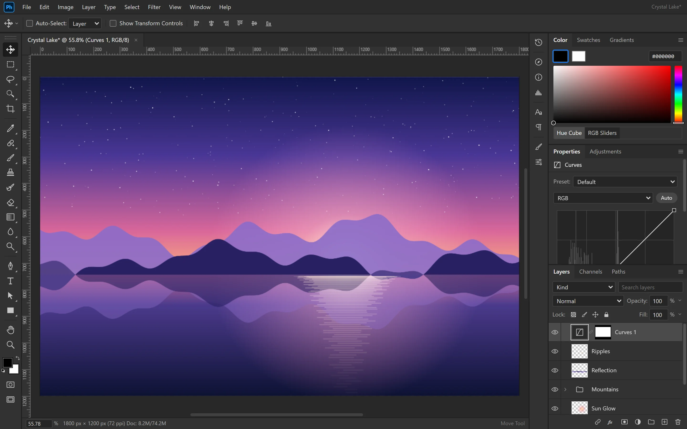
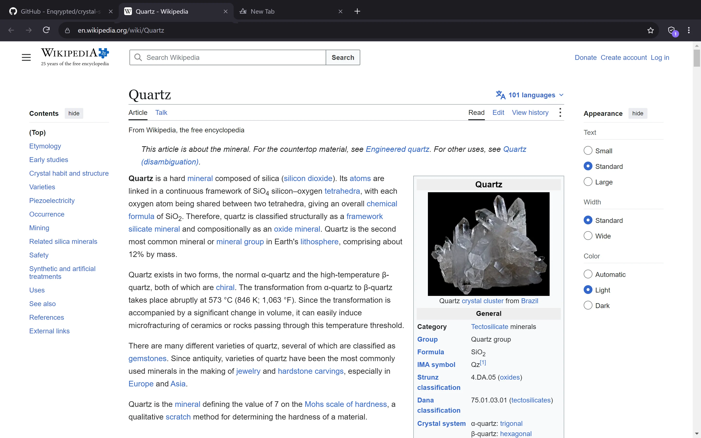
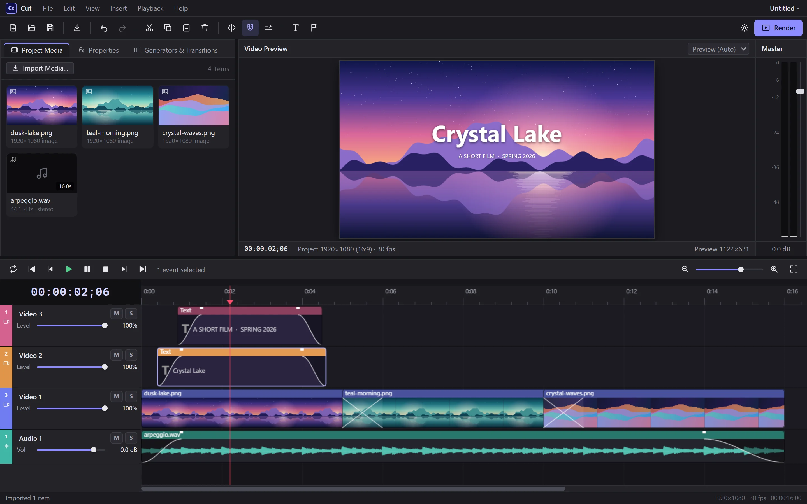
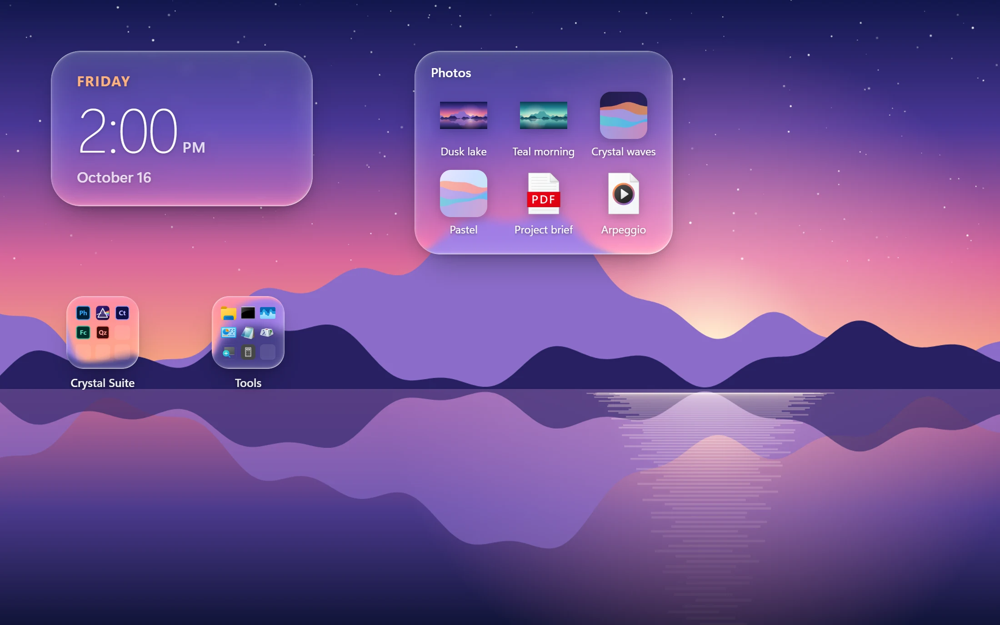
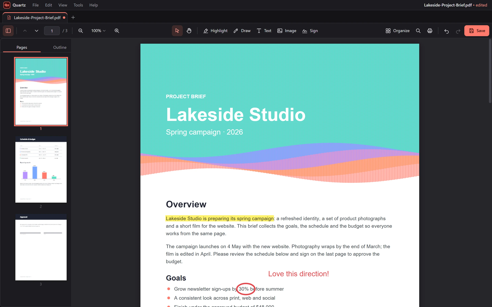
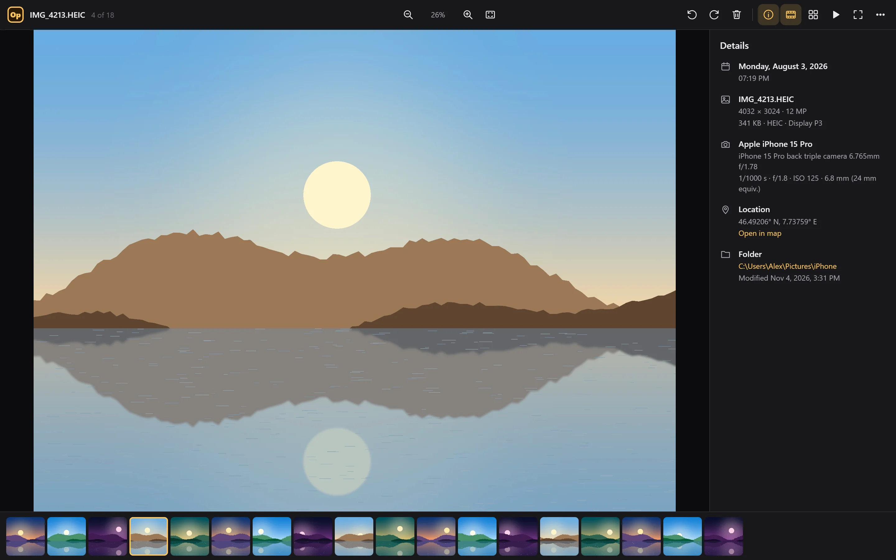

The free alternative to Adobe Creative Cloud.
A Photoshop-style photo editor that opens PSD files, a PDF editor, a video editor and more, in one small launcher for Windows. No subscription, no account, no telemetry.
- Free forever
- No account
- Open source (MIT)
- Windows
- Mac (Photon)

Everything you pay Adobe for. Free.
Install only the apps you want. Each one gets its own shortcut, opens on its own and keeps itself up to date.
Photon
Photo editorA layered image editor laid out like Photoshop, with its tools, panels and shortcuts. Retouch photos, build composites, and open or save PSD files.
- Layers, groups, masks and all 27 blend modes
- Curves, Levels, Camera Raw, Liquify and dozens of filters
- Opens and saves PSD, PNG, JPEG, WebP and more
Prism
Web browserA Chromium browser with ad and tracker blocking built in, and nothing you didn’t ask for: no account, no sync, no news feed, no telemetry.

Cut
Video editorA video editor laid out like Sony Vegas Pro: media, preview and properties on top, the timeline below. Cut, layer, mix and render to MP4 or WebM.

Facet
Desktop widgetsFolders and widgets that live on the Windows desktop itself: iPhone-style folders for your shortcuts, a clock, Spotify and a Control Center, in liquid glass.

Quartz
PDF editorRead, fill, sign and edit PDFs. Quartz opens documents in tabs, adds highlights, notes and signatures, and rearranges pages.

Onyx
Game recorderOnyx keeps the last two minutes of your games ready to save. When something great happens, press Ctrl+Shift+G and keep it as a clip.

Opal
Photo viewerA fast photo viewer that opens iPhone HEIC photos with no extra codecs, steps through your folders and turns HEIC into JPEG when you need to share.

Feels like Photoshop. Costs nothing.
Photon has Photoshop’s layout, tools and shortcuts, so you already know how to use it.
- Layers, groups, masks, clipping masks and all 27 blend modes
- Adjustment layers, Camera Raw, Liquify, Warp and dozens of filters
- Healing, Patch, Clone Stamp and Content-Aware Fill
- Layer styles: Drop Shadow, Bevel & Emboss, Glow, Stroke and more
- Opens and saves layered PSD files
No account. No subscription. No catch.
How it compares
Adobe’s apps do more. Crystal Suite does the everyday jobs, for free, on your own terms.
| Feature | Crystal Suite | Adobe Creative Cloud |
|---|---|---|
| Price | Free | Monthly or yearly subscription |
| Account needed | No | Yes, an Adobe account |
| Works offline | Needs periodic sign-in | |
| Open source | ||
| Photo editing with layers & PSD | ||
| PDF editing & signing | ||
| Video editing | ||
| Windows 10 & 11 | ||
| macOS | Launcher & Photon |
Questions, answered
Is Crystal Suite really free?
Yes. Every app is free and open source under the MIT license. There is no paid tier, no trial, no ads and nothing to unlock.
Is it a free alternative to Adobe Creative Cloud?
Crystal Suite covers the everyday Creative Cloud jobs with free apps: Photon for photo editing (like Photoshop), Quartz for PDFs (like Acrobat), Cut for video (like Premiere Pro or Vegas Pro) and Opal for viewing photos. Vector, Darkroom, Motion and Layout are planned.
Do I need an account?
No. There is nothing to sign up for. Your files stay on your PC, and the apps work offline.
Can it open Photoshop (PSD) files?
Yes. Photon opens PSD files with their layers, masks, blend modes and opacity, and saves layered PSD files that Photoshop opens.
Is it safe to install?
The source code is public on GitHub. The installer isn’t code-signed yet, so Windows SmartScreen may warn the first time: click More info, then Run anyway. Every app download is checked against its published SHA-256 checksum.
Does it work on Mac?
Yes, partly: the Crystal Suite launcher and Photon run on macOS 11 or newer (Apple silicon and Intel). The other apps are Windows-only for now and show as “Coming to Mac”. Linux isn’t supported yet.
Get Crystal Suite free
One small launcher for Windows 10 and 11. Install the apps you want with one click; they keep themselves up to date.